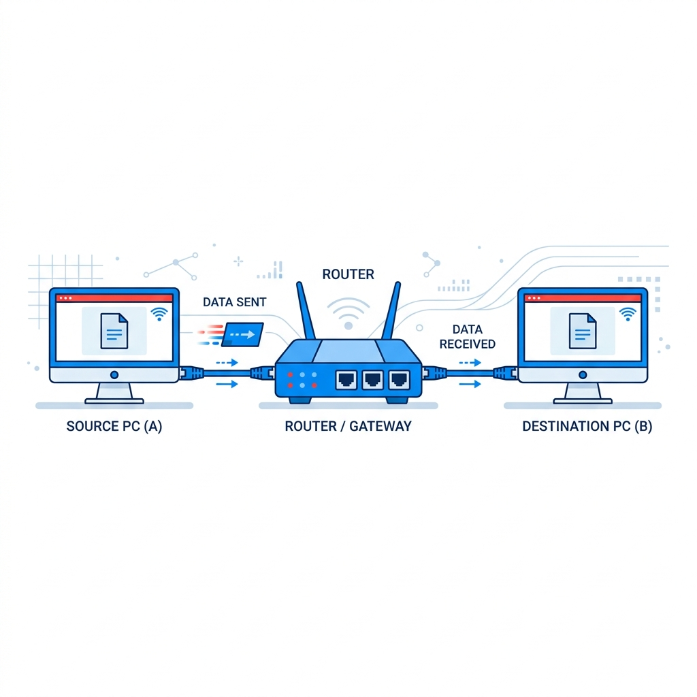

Routing Statis & Dinamis
Pertemuan 9
Materi: Konsep Routing, Routing Statis, RIP, OSPF, BGP & Simulasi Packet Tracer
Referensi Utama: Kurose & Ross — Computer Networking (8th Ed) & Cisco Networking Academy
Dosen Pengampu:
Outline Materi
1. Konsep Dasar Routing & Forwarding
- Fungsi Router, Control vs Data Plane
- Routing Table, AD & Longest Prefix Match
2. Routing Statis (Static Routing)
- Sintaks Konfigurasi
ip route - Default Route & Floating Static (Backup)
3. Dynamic Routing: RIP (Distance Vector)
- Taksonomi IGP vs EGP, Konsep AS
- Count-to-Infinity & Simulator Bellman-Ford
4. OSPF (Link-State Protocol)
- Prinsip LSDB, Metrik Cost & Simulasi Dijkstra
- Hierarki Multi-Area & Peran DR/BDR
5. BGP (Border Gateway Protocol)
- Perutean Inter-AS, eBGP vs iBGP
- Path Attributes & Kebijakan Routing (Policy)
6. Komparasi
- Matriks Evaluasi 4 Protokol & Panduan Pemilihan
1. Konsep Dasar Routing & Forwarding
Peran Router, Control Plane vs Data Plane, dan Struktur Routing Table
Anatomi Router & Forwarding Paket
Router adalah perangkat Layer 3 (Network Layer) yang menghubungkan dua atau lebih subnet/jaringan yang berbeda.
1. Routing (Control Plane): Proses menentukan rute/jalur terbaik dari sumber ke tujuan.
2. Forwarding (Data Plane): Proses fisik memindahkan paket dari interface input ke interface output yang tepat.
Router mengambil keputusan penerusan berdasarkan informasi yang tercantum dalam Routing Table (Tabel Penerusan).

Struktur Routing Table
Routing Table berisi daftar jaringan tujuan yang diketahui oleh router beserta jalur untuk
mencapainya. Contoh tampilan routing table pada Cisco IOS (show ip route):
•
C = Connected (Terhubung langsung)•
S = Static Route (Rute manual)•
O = OSPF, R = RIP, B = BGP
• Nilai pertama = Administrative Distance (AD)
• Nilai kedua = Metric (biaya/jarak ke tujuan)
Administrative Distance (AD) & Metrik
Administrative Distance (AD)
Tingkat kepercayaan (trustworthiness) dari sumber rute. Jika router menerima informasi tujuan yang sama dari protokol berbeda, nilai AD terkecil yang dipilih masuk ke routing table.
| Sumber Rute | Nilai AD |
|---|---|
| Connected Interface | 0 (Paling Dipercaya) |
| Static Route | 1 |
| eBGP (External BGP) | 20 |
| OSPF | 110 |
| RIP | 120 |
| iBGP (Internal BGP) | 200 |
Metric (Metrik Rute)
Nilai kuantitatif yang digunakan oleh protokol yang sama untuk memilih jalur terbaik jika terdapat beberapa jalur alternatif.
• RIP: Hop count (jumlah router perantara).
• OSPF: Cost (berdasarkan bandwidth link).
• BGP: BGP Path Attributes (AS-Path, Local Pref, MED).
Prinsip Longest Prefix Match (LPM)
Ketika router menerima paket IP, router akan mencocokkan IP tujuan paket dengan semua rute di Routing Table. Aturan pemilihannya: Rute dengan subnet mask paling panjang (paling spesifik) yang akan dipilih.
192.168.1.150.Terdapat 3 rute yang cocok di Routing Table:
| Rute di Routing Table | Prefix Length | Next Hop | Keputusan Router |
|---|---|---|---|
0.0.0.0/0 (Default Route) |
0 bit | 10.0.0.1 | Cocok (tetapi paling umum) |
192.168.0.0/16 |
16 bit | 10.0.0.2 | Cocok (lebih spesifik) |
192.168.1.128/25 |
25 bit | 10.0.0.3 | DIPILIH (Longest Match / Paling Spesifik) |
Karena /25 memiliki bit
paling panjang yang cocok dengan 192.168.1.150, paket diteruskan ke
10.0.0.3, mengabaikan rute /16 dan /0.
2. Routing Statis (Static Routing)
Rute Manual, Gateway of Last Resort, dan Redundansi Floating Static
Karakteristik Routing Statis
- Efisiensi Sumber Daya: Tidak membebani CPU dan RAM router karena tidak ada proses kalkulasi algoritma.
- Bebas Overhead Bandwidth: Tidak ada pertukaran paket update rute di jaringan.
- Keamanan Terjamin: Administrator memegang kendali penuh. Tidak ada risiko pemalsuan rute (route spoofing).
- Prediktabilitas Tinggi: Rute selalu pasti dan tidak berubah-ubah.
- Konfigurasi Manual: Sangat melelahkan pada jaringan berskala menengah hingga besar (N × (N-1) entri).
- Tidak Adaptif (Tidak Ada Failover Otomatis): Jika kabel atau router perantara putus, router tidak dapat mengalihkan rute secara otomatis.
- Rentan Human Error: Kesalahan ketik satu digit IP atau netmask menyebabkan paket terputus (blackhole).
Konfigurasi Routing Statis
(Cisco IOS)
Perintah dasar konfigurasi Static Route pada Cisco IOS:
1. Menggunakan Next-Hop IP (Rekursif):
Router harus mencari interface keluar (*exit interface*) berdasarkan alamat IP 10.0.0.2 (proses *recursive lookup*).
2. Menggunakan Exit Interface (Directly Attached):
Sangat cocok untuk link point-to-point (Serial). Hindari pada interface Ethernet karena router akan membroadcast request ARP untuk setiap host tujuan!
Router(config)# ip route 192.168.2.0 255.255.255.0 GigabitEthernet0/1 10.0.0.2
Default Route
(Gateway of Last Resort / Cisco IOS)
Default Route adalah jenis rute statis khusus yang mencakup seluruh alamat tujuan yang tidak tercantum secara spesifik di routing table.
• IP
0.0.0.0 = Alamat jaringan apa pun.• Netmask
0.0.0.0 = Nilai prefix 0 bit (cocok dengan alamat IPv4 mana
pun).
Menjadi Gateway of Last Resort pada router cabang/perusahaan untuk meneruskan lalu lintas internet publik menuju router ISP.
Router ITERA mengarahkan semua lalu lintas di luar kampus ITERA ke Gateway Telkom / Indosat:
Router-ITERA(config)# ip route 0.0.0.0 0.0.0.0 202.10.1.1
Floating Static Route
(Rute Cadangan)
Floating Static Route adalah rute statis yang dikonfigurasikan dengan nilai Administrative Distance (AD) yang sengaja dibuat lebih tinggi daripada rute utama, sehingga berfungsi sebagai jalur cadangan otomatis (*backup link*).
Router memilih jalur AD 1 (10.1.1.2). Jalur AD 10 tidak muncul di routing table ("mengambang/floating").
Interface 10.1.1.2 down → Rute AD 1 dihapus dari tabel → Rute cadangan AD 10 seketika aktif meneruskan paket!
3. Dynamic Routing & RIP (Distance Vector)
Otomasi Pembaruan Rute, Taksonomi IGP/EGP & Protokol Klasik Bellman-Ford
Taksonomi Protokol
Dynamic Routing
Dynamic Routing Protocol memungkinkan router untuk saling bertukar informasi rute secara otomatis dan memperbarui routing table ketika topologi berubah.
Routing di dalam satu Autonomous System (AS) / satu organisasi.
- Distance Vector: RIPv1, RIPv2, EIGRP. Mengetahui arah (vector) dan jarak (distance).
- Link State: OSPF, IS-IS. Mengetahui peta topologi graf utuh seluruh jaringan.
Routing antar Autonomous System (AS) yang berbeda di internet publik.
- Path Vector: BGP (Border Gateway Protocol v4).
- Mempertimbangkan atribut jalur (AS-Path) dan kebijakan bisnis (routing policies).
RIP (Routing Information Protocol)
RIP adalah salah satu protokol routing dinamis tertua (didefinisikan dalam RFC 1058).
- Tipe: IGP Distance Vector (Algoritma Bellman-Ford).
- Metrik: Hop Count (jumlah router yang dilewati).
- Batas Hop: Maksimal 15 Hop. Hop ke-16 dianggap
Unreachable.
- Mekanisme Update: Mengirim seluruh isi routing table ke tetangga
secara periodik setiap 30 detik via UDP Port 520.
- Administrative Distance: 120.

Perbandingan: RIPv1 vs RIPv2
| Fitur | RIPv1 | RIPv2 |
|---|---|---|
| Tipe Pengalamatan | Classful (Hanya Class A, B, C baku) | Classless (Mendukung VLSM & CIDR) |
| Subnet Mask di Update | Tidak disertakan | Disertakan dalam paket update |
| Metode Transmisi Update | Broadcast ke 255.255.255.255 (Semua host terganggu) |
Multicast ke alamat khusus 224.0.0.9 |
| Autentikasi Keamanan | Tidak ada | Mendukung Plain-text & MD5 Hash |
| Ringkasan Rute | Otomatis dipaksa (Auto-summary) | Bisa dinonaktifkan (no auto-summary) |
Count-to-Infinity &
Pencegah Loop RIP
Pada Distance Vector, jika sebuah link mati, router tetangga mungkin tetap saling mengabarkan rute palsu secara berulang sehingga metrik bertambah terus menuju tak terhingga (Count-to-Infinity).
Aturan: Router tidak boleh mengumumkan kembali informasi rute ke interface yang menjadi sumber informasi rute tersebut.
Ketika rute putus, router sengaja mengiklankan rute tersebut dengan metrik 16 (Infinity) untuk segera membunuh rute mati.
Router menolak update rute baru untuk durasi tertentu (180 detik) setelah rute mati, guna memberi waktu konvergensi jaringan.
Simulasi Interaktif: Distance Vector & Bellman-Ford
d_x(y) = min_v { c(x,v) + d_v(y) } • Simulator grid 3×3
• Visualisasi Count-to-Infinity
4. OSPF (Open Shortest Path First)
Evolusi dari Distance Vector: Protokol Link-State Berkecepatan Tinggi
Konsep Dasar OSPF (Link-State)
OSPF adalah protokol IGP Link-State standar terbuka (RFC 2328). Hadir menjawab kelemahan Distance Vector: router tidak lagi mengandalkan kabar tetangga, melainkan memetakan graf topologi utuh secara mandiri.
• Kumpulkan status interface → Sebar via LSA (Link-State Advertisement).
• Bangun basis data topologi lengkap: LSDB (Link-State Database).
• Eksekusi Algoritma Dijkstra (SPF) membentuk pohon rute terpendek (Shortest Path Tree).
Administrative Distance: 110 • Transport: IP Protocol
89 (Multicast 224.0.0.5 & 224.0.0.6)

Simulasi Interaktif: Algoritma Dijkstra (Link-State)
D(v) = min(D(v), D(u) + c(u,v)) • Stepper graf interaktif •
Pohon rute & Forwarding Table
Metrik OSPF: Perhitungan Cost
OSPF tidak menggunakan hop count. Metrik OSPF disebut Cost, yang berbanding terbalik dengan bandwidth interface:
| Tipe Interface | Bandwidth | Formula Cost (Default) | Nilai Cost |
|---|---|---|---|
| Serial Cable (T1) | 1.544 Mbps | $100.000.000 / 1.544.000$ | 64 |
| Ethernet | 10 Mbps | $100.000.000 / 10.000.000$ | 10 |
| FastEthernet | 100 Mbps | $100.000.000 / 100.000.000$ | 1 |
| GigabitEthernet | 1 Gbps (1000 Mbps) | $100.000.000 / 1.000.000.000$ | 1 (Membulatkan ke 1) |
Router(config-router)# auto-cost reference-bandwidth 10000 (menjadi 10 Gbps).
Hierarki Multi-Area &
Peran Router OSPF
Membagi jaringan menjadi beberapa area bertujuan untuk membatasi banjir LSA dan memperkecil ukuran LSDB pada router lokal.
- Area 0 (Backbone Area): Area pusat inti. Seluruh area non-backbone wajib terhubung langsung ke Area 0.
- Regular Area (Area 1, 2, dst): Mengelompokkan subnet departemen/gedung.
- Internal Router: Semua interfacenya berada di dalam area yang sama.
- ABR (Area Border Router): Router yang memiliki interface di Area 0 dan interface lain di area non-backbone.
- ASBR (Autonomous System Boundary Router): Router yang menghubungkan jaringan OSPF ke dunia luar (Static Route, BGP, atau RIP).
Paket OSPF, Adjacency & DR/BDR
5 Tipe Paket OSPF:
- 1. Hello: Menemukan dan menjaga tetangga (*keepalive* 10s).
- 2. DBD (Database Description): Ringkasan isi LSDB.
- 3. LSR (Link State Request): Meminta data LSA spesifik.
- 4. LSU (Link State Update): Mengirim data LSA lengkap.
- 5. LSAck: Konfirmasi penerimaan paket LSU.
Down → Init → 2-Way → ExStart → Exchange → Loading → Full
Peran DR & BDR (Multi-Access Ethernet):
Jika 5 router terhubung pada satu switch, akan ada 5 x 4 / 2 = 10 koneksi bertetangga yang memicu ledakan LSA flooding. Solusinya:
• BDR (Backup DR): Router cadangan jika DR gagal.
• DROther: Router biasa, hanya berteman penuh (*Full Adjacency*) dengan DR dan BDR melalui multicast
224.0.0.6.
5. BGP (Border Gateway Protocol)
Dari Jaringan Internal Menuju Perutean Internet Global (Exterior Gateway)
Pengantar BGP: Protokol Penggerak Internet
BGP adalah protokol Exterior Gateway Protocol (EGP) standar internet dunia. Jika OSPF bekerja di dalam kampus (Intra-AS), BGP menghubungkan kampus ke ratusan ribu jaringan internet global (Inter-AS).
Kumpulan jaringan di bawah satu kendali organisasi dengan nomor identitas global unik: ASN (Autonomous System Number) (misal: ITERA, Google, Telkom).
• Tipe: Path-Vector (atribut AS-Path & kebijakan bisnis).
• Transport: TCP Port 179 • Skala: >950.000 rute internet global!

Dua Mode Operasi: eBGP vs iBGP
Sesi BGP yang dibangun antar router yang berada di Autonomous System yang berbeda.
- Contoh: Koneksi antara Router Edge Telkom (AS 7713) dengan Router Edge Google (AS 15169).
- Secara default mengasumsikan router terhubung langsung secara fisik (IP TTL = 1).
- Mengubah nilai attribute Next-Hop ke IP dirinya sendiri saat mengumumkan rute ke AS luar.
- Administrative Distance: 20.
Sesi BGP yang dibangun antar router yang berada di dalam Autonomous System yang sama.
- Berfungsi menyinkronkan rute eksternal yang didapat dari luar ke seluruh router border internal.
- Tidak memerlukan koneksi fisik langsung (bisa melewati beberapa hop router IGP).
- Membutuhkan topologi Full-Mesh atau menggunakan Route Reflector untuk mencegah loop internal.
- Administrative Distance: 200.
BGP Path Attributes & Kebijakan Routing (Policy)
BGP tidak menggunakan rumus metrik tunggal seperti RIP atau OSPF. Keputusan rute BGP ditentukan oleh urutan evaluasi Path Attributes:
Daftar nomor ASN yang telah dilalui paket.
Contoh:
AS-PATH: 15169 7713 23700.• Jalur dengan AS-PATH lebih pendek lebih diprioritaskan.
• Pencegah Loop: Jika router melihat ASN miliknya sendiri ada di daftar AS-PATH yang diterima, rute seketika dibuang!
Nilai lokal di dalam AS untuk menentukan jalur keluar mana yang paling disukai (skala nilai lebih tinggi = lebih disukai). Digunakan untuk memilih ISP utama vs ISP backup.
Menentukan alamat IP gateway router perantara menuju AS tetangga berikutnya.
Saran yang diberikan ke AS tetangga mengenai titik masuk mana yang paling diharapkan ke dalam AS kita (nilai lebih kecil = lebih disukai).
6. Komparasi Menyeluruh Protokol Routing
Matriks Evaluasi, Trade-off Performa, dan Panduan Desain Arsitektur
Tabel Komparasi Menyeluruh
| Parameter | Routing Statis | RIPv2 | OSPF | BGPv4 |
|---|---|---|---|---|
| Tipe Protokol | Manual | IGP (Distance Vector) | IGP (Link-State) | EGP (Path-Vector) |
| Algoritma | Manusia (Manual) | Bellman-Ford | Dijkstra (SPF) | Policy-based Best Path |
| Metrik | Tidak ada | Hop Count (Maks 15) | Cost (Bandwidth link) | BGP Attributes (AS-Path, dsb) |
| Admin Distance (AD) | 1 | 120 | 110 | 20 (eBGP) / 200 (iBGP) |
| Protokol Transport | Langsung di Kernel | UDP Port 520 | IP Protocol 89 | TCP Port 179 |
| Waktu Konvergensi | Manual (Tidak adaptif) | Lambat (30–180 detik) | Sangat Cepat (< 2 detik) | Moderat (Puluhan detik) |
| Beban CPU & RAM | Sangat Rendah | Rendah | Tinggi (Kalkulasi graf) | Sangat Tinggi (Jutaan tabel) |
| Penggunaan Ideal | SOHO, Stub, Default Route | Lab praktikum kecil | Kampus, Enterprise, Data Center | Antar ISP, Internet Backbone |
Panduan Memilih Solusi
Routing yang Tepat
- Jaringan dengan jumlah router ≤ 3 buah.
- Koneksi cabang ke kantor pusat (hub-and-spoke stub).
- Membuat default route keluar ke modem/ISP.
- Kebutuhan rute cadangan sederhana (floating static).
- Jaringan perusahaan, kampus, atau ISP lokal.
- Topologi memiliki banyak jalur redundansi *mesh*.
- Perangkat multi-vendor (Cisco, MikroTik, Juniper).
- Butuh konvergensi cepat tanpa batas 15 hop.
- Memiliki nomor ASN resmi dan blok IP Public mandiri.
- Perusahaan terhubung ke 2 ISP berbeda (multi-homing).
- Penyedia layanan internet (ISP/Telco).
- Pertukaran rute di Internet Exchange Point (OpenIXP/IIX).
7. Tugas Mandiri & Simulasi Praktikum
Studi Kasus Jaringan Multi-Router pada Cisco Packet Tracer
📝 Tugas Mandiri: Simulasi Cisco Packet Tracer
Rancang dan simulasikan arsitektur jaringan multi-router pada software Cisco Packet Tracer dengan spesifikasi berikut:
1. Topologi Perangkat: Minimal terdiri dari 2 buah Router, 2 buah Switch, 1 buah Access Point (Wireless), 1 buah Server (difungsikan sebagai DHCP Server), serta minimal 4 client campuran (PC Kabel, Laptop Wireless, Smartphone).
2. Skema Subnetting & DHCP: Terapkan teknik VLSM untuk memisahkan subnet LAN Kabel, subnet LAN Nirkabel, dan subnet penghubung antar-Router (Point-to-Point /30). Pastikan seluruh client otomatis mendapatkan IP Address dari DHCP Server.
3. Konfigurasi Routing (Bandingkan 2 Kasus):
• Kasus A: Hubungkan kedua router menggunakan Routing
Statis dan Default Route.
• Kasus B: Ganti routing statis dengan protokol OSPF Area
0.
Lakukan uji konektivitas PING dan traceroute dari Laptop nirkabel
ke PC kabel hingga berhasil 100% (Reply)!
Tanya Jawab & Diskusi
Pertemuan berikutnya: Pertemuan 10: INTERVLAN Routing
Persiapkan konsep VLAN (Virtual Local Area Network), Trunking 802.1Q, Router-on-a-Stick, dan Switch Layer 3.